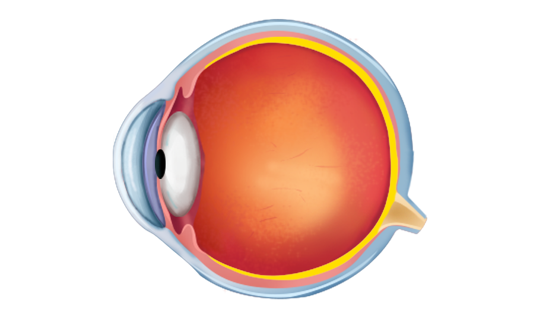
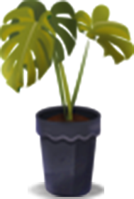

_1_200521.svg)
Observe why blurred image is formed in different eye defects and then correct them using the correct type of lens.


Diverging
Converging
Curvature of the lens
_1_200521.svg)
To correct myopia, the power of the corrective lens should be ___________?

Solution
- In a myopic eye, the image forms before the retina.
- By reducing the converging power, the image can be focused on the retina.
- Thus, the corrective lens decreases the converging power.